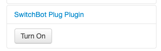

OctoPrintのプラグインを作ってみる
はじめに
OctoPrintからSwitchBot PlugのOn/Offを制御するプラグインを作ってみました。 今回、このプラグインの作成を通してハマった点のメモを残しておきます。
やったこと
- OctoPrintからSwitchBot PlugのOn/Offを制御するプラグインを作成
作ったものについて
常時3Dプリンタを起動しているのは無駄なので、電源の管理にSwitchBot Plugを使ってみました。スマホからSwitchBot Plugを操作することはできるのですが、折角なのでOctoPrintから操作したいと思いプラグインを作成しました。

このプラグインを導入すると、以下の様にSwitchBot PlugのOn/Offを制御するボタンがサイドバーに出現します。

仕組みとしては、シンプルにフロントエンドのボタン押下に応じてSwitchBot APIを叩くだけです。SwitchBot APIはサーバー側から呼び出しています。後から振り返ってみると、フロントエンド側から直接SwitchBot APIを叩いても良かったかなと思っています。
OctoPrintプラグインについて
OctoPrintプラグインの作成については、Plugin Tutorialを参考にするのが手っ取り早いと思います。 このチュートリアルでは、プラグインの保存先として~/.octoprint/pluginsが紹介されています。 しかしながら、私の環境では上記ディレクトリに配置したプラグインは読み込まれませんでした。 その様な場合、プラグインの保存先ディレクトリはOctoPrintのブートログから確認することができます。
...
2022-11-02 01:18:22,845 - octoprint.util.connectivity.connectivity_checker - INFO - Resolving octoprint.org is working
2022-11-02 01:18:22,846 - octoprint.plugin.core - INFO - Loading plugins from /Users/argon/workspace/OctoPrint/src/octoprint/plugins, /Users/argon/Library/Application Support/OctoPrint/plugins and installed plugin packages...
2022-11-02 01:18:23,148 - octoprint.plugin.core - INFO - Plugin Pi Support Plugin (2022.6.13) did not pass check, not loading.
...また、上記チュートリアルで作成するプラグインはフロントエンド側の処理のみで完結しています。 そこで、ここではサーバー側との連携について少しだけメモを残しておくことにします。
サーバー側で処理を行う
OctoPrintプラグインにおいて、フロントエンド<->サーバー間の連携は単純にWebAPIを介して行われます。 サーバー側で処理を行う場合、以下の何かのクラスを継承して必要なメソッドを実装します。
- octoprint.plugin.SimpleApiPlugin
- octoprint.plugin.BlueprintPlugin
前者は、GETとPOSTに応じたget_api_commandsとon_api_commandとを実装することでAPIを提供します。 後者はFlaskのBlueprintを利用してAPIを提供します。
今回は以下の様にBlueprintPluginを継承してAPIを提供しています。
class SwitchBotPlugPlugin(
octoprint.plugin.SettingsPlugin,
octoprint.plugin.AssetPlugin,
octoprint.plugin.TemplatePlugin,
octoprint.plugin.BlueprintPlugin,
):
...
@octoprint.plugin.BlueprintPlugin.route("/turnon", methods=["POST"])
def turnon(self):
self._logger.info("turnon")
...
@octoprint.plugin.BlueprintPlugin.route("/turnoff", methods=["POST"])
def turnoff(self):
self._logger.info("turnoff")
...
@octoprint.plugin.BlueprintPlugin.route("/status", methods=["GET"])
def status(self):
self._logger.info("status")
...JavaScript Clientについて
サーバー側から提供されるのは単純なWeb APIであるため、フロントエンドからはfetchやaxiosなどを用いて呼び出すことももちろん可能です。 しかしながら、OctoPrintではOctoPrintClientというクラスが提供されており、準備したWeb API用のクライアントをinjectionして、このクラスを経由して使用することが推奨されてるようです。
以下にサンプルコードを参考に自作プラグイン用クライアントをinjectionする例を示します。
(function (global, factory) {
if (typeof define === "function" && define.amd) {
define(["OctoPrintClient"], factory);
} else {
factory(window.OctoPrintClient);
}
})(window || this, function(OctoPrintClient) {
var SwitchBotPlug = function(base) {
this.base = base;
this.baseUrl = OctoPrint.getBlueprintUrl("switchbot_plug");
};
SwitchBotPlug.prototype.turnon = function() {
const url = `${this.baseUrl}/turnon`;
return OctoPrint.post(url, {}, {contentType: "application/json"});
};
SwitchBotPlug.prototype.turnoff = function() {
const url = `${this.baseUrl}/turnoff`;
return OctoPrint.post(url, {}, {contentType: "application/json"});
};
SwitchBotPlug.prototype.status = function() {
const url = `${this.baseUrl}/status`;
return OctoPrint.get(url)
};
OctoPrintClient.registerPluginComponent("switchbot_plug", SwitchBotPlug);
return SwitchBotPlug;
});